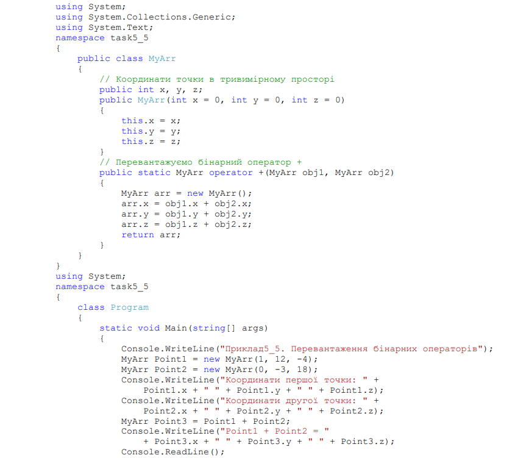
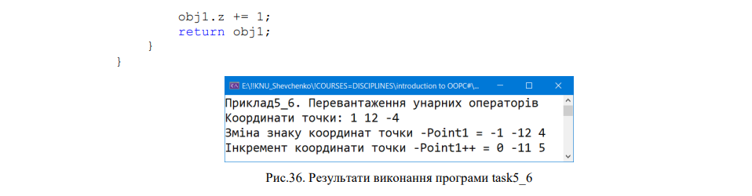
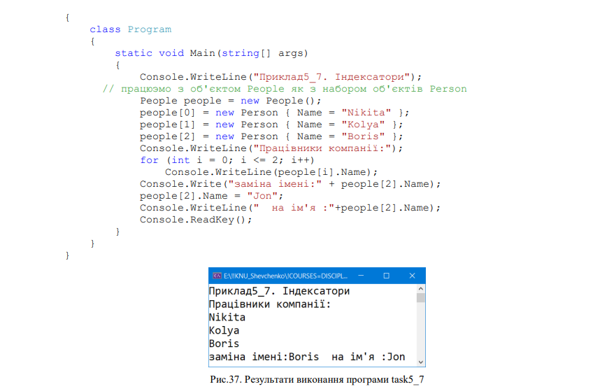

Приклади виконання завдань
Поліморфізм є третім принципом об'єктно-орієнтованого програмування після
інкапсуляції та успадкування. Поліморфізм означає "різноманітність форм".
Поліморфізм – це властивість програмного коду змінювати свою поведінку в
залежності від ситуації, яка виникає при виконанні програми. В контексті реалізації
поліморфізм – це технологія виклику віртуальних функцій, що реалізовані в ієрархічно
зв’язаних класах. Ієрархія класів формується на основі механізму спадковості. Під час
виконання об’єкти похідного класу можуть бути оброблені як об’єкти базового класу,
якщо вони є параметрами методу, колекціями або масивами. Коли виникає
поліморфізм, оголошений тип об’єкта перестає відповідати своєму типу під час
виконання.
Базові класи можуть визначати та реалізовувати віртуальні методи, а похідні
класи − перевизначати їх, тобто надавати своє власне визначення та реалізацію. У
вихідному коді можна викликати метод у базовому класі та забезпечити виконання
версії методу, що відноситься до похідного класу.
1. Перевантаження методів
Використання декількох методів з одним і тим самим іменем, але різними
типами параметрів називається перевантаженням методів.
Компілятор визначає, який саме метод потрібно викликати за типом
фактичних параметрів. Наприклад, нижче наведено декілька оголошень метода
max(), який повертає найбільше із значень для різних типів і кількості
параметрів. Студентам пропонується написати реалізації оголошених методів
самостійно.
Багато методів, які реалізовані в мові C#, перевантажені.
2. Віртуальні члени класу
Базові класи можуть визначати і реалізовувати віртуальні методи, а похідні
класи − перевизначати їх, тобто надавати своє власне визначення і реалізацію. Під час
виконання, коли клієнт викликає метод, CLR виконує пошук типу об'єкта під час
виконання і викликає перезапис віртуального методу. У вихідному коді можна
викликати метод в базовому класі і забезпечити виконання версії методу, що
відноситься до похідному класу.
Похідний член повинен використовувати ключове слово override, яке вказує, що
метод призначений для участі у віртуальному виклику. Віртуальні методи і властивості
дозволяють похідним класам розширювати базовий клас без необхідності
використовувати реалізацію методу базового класу.
3. Приховування членів базового класу новими членами
Якщо ви хочете, щоб похідний клас мав член з тим самим іменем, що і член в базовому класі, можна використовувати ключове слово new, щоб приховати член базового класу. Ключове слово new вставляється перед типом значення, що повертається, члена класу, що заміщає. Розглянемо приклад task5_3.
Тут визначено клас Person, який представляє людину, та клас Employee, який
представляє працівника підприємства. Клас Employee успадковує від класу Person всі
властивості та методи. Але в класі Employee, крім успадкованих властивостей, є також
і власна властивість Company, яка зберігає назву компанії. І потрібно в методі Print()
виводити інформацію про компанію разом із ім’ям працівника на консоль. Для цього
визначається метод Print() з ключовим словом new, який приховує реалізацію методу
з базового класу.
В яких ситуаціях можна використовувати приховування? Наприклад, у
поданому вище прикладі метод Print() у базовому класі не є віртуальним, ми не
можемо його перевизначити, але, припустимо, нас не влаштовує його реалізація для
похідного класу, тому ми можемо скористатися прихованням, щоб визначити
потрібний нам функціонал у похідному класі.
4. Захист віртуальних членів від перевизначення похідними класами
Похідний клас може зупинити віртуальне успадкування, оголосивши перевизначення як запечатаний. Для зупинки спадкування в C# в оголошення класу або члена класу потрібно вставити ключове слово sealed. Отже, ключове слово sealed використовується у двох випадках: коли потрібно заборонити спадкування від певного класу; коли необхідно заборонити перевизначення деякого методу або властивості в ієрархії класів. Ця ситуація можлива, якщо в ієрархії класів методи успадкованих класів перевизначають віртуальні методи базових класів. Це дозволяє класам успадковувати від іншого класу, забороняючи їм перевизначати певні віртуальні методи або властивості. При створенні методів з модифікатором sealed треба враховувати, що sealed застосовується в парі з override, тобто тільки в методах, що перевизначаються.
Розглянемо приклад task5_4, в якому описані класи Person, Employee, похідний від Person, та Developer, похідний від Employee. В класі Person визначимо віртуальний метод Print(), який перевизначимо та запечатаємо в класі Employee. В класі Developer спробуємо перевизначити запечатаний в базовому класі метод Print(). Отримаємо помилку компіляції: неможливо перевизначити член Employee.Print(), що успадковується, оскільки він запечатаний. І в цьому випадку ми не зможемо перевизначити метод Print() у класі, успадкованому від Employee. Прикладом використання модифікатора sealed є наступний код програми task5_4:

5. Доступ до віртуальних членів базового класу з похідних класів
Похідний клас, який замінив або перевизначив метод або властивість, може отримати доступ до методу або властивості базового класу за допомогою ключового слова base.
6. Перевантаження операторів
Поряд з методами можна перевантажувати оператори. Для перевантаження оператора служить ключове слово operator, що визначає операційний метод, який, в свою чергу, визначає дію оператора щодо свого класу. Існують дві форми операторних методів (operator): одна − для унарних операторів, інша − для бінарних. Нижче наведена загальна форма для кожного різновиду цих методів:
6.1. Перевантаження бінарних операторів
Для бінарних операторів (+, -, *, /, %, ==, !=, >, < тощо) тип значення, що повертається, співпадає з класом, в якому перевантажується оператор. В якості параметрів використовуються об’єкти того самого класу, що й тип значення, що повертається. Зверніть увагу на те, що операційні методи повинні мати обидва специфікатори типу public і static, оскільки застосовуються до усіх об’єктів (екземплярів) класу. Розглянемо приклад task5_5
6.2. Перевантаження унарних операторів
Унарні оператори (++, --, -) перевантажуються так само як і бінарні. Головна відмінність полягає в тому, що методи мають лише один операнд. Для унарних операторів параметр позначає операнд, що передається.
7. Індексатори
Індексатори дозволяють індексувати об'єкти і звертатися до даних за індексом. Фактично за допомогою індексаторів ми можемо працювати з об'єктами як з масивами. За формою вони нагадують властивості зі стандартними блоками get і set, які повертають і привласнюють значення. Формальне визначення індексатора:
На відміну від властивостей індексатор не має назви. Замість нього вказується ключове слово this, після якого в квадратних дужках йдуть параметри. Індексатор повинен мати як мінімум один параметр.
Слід враховувати, що індексатор не може бути статичним і застосовується тільки до примірника класу. Але при цьому індексатори можуть бути віртуальними й абстрактними і можуть перевизначатися в похідних класах.